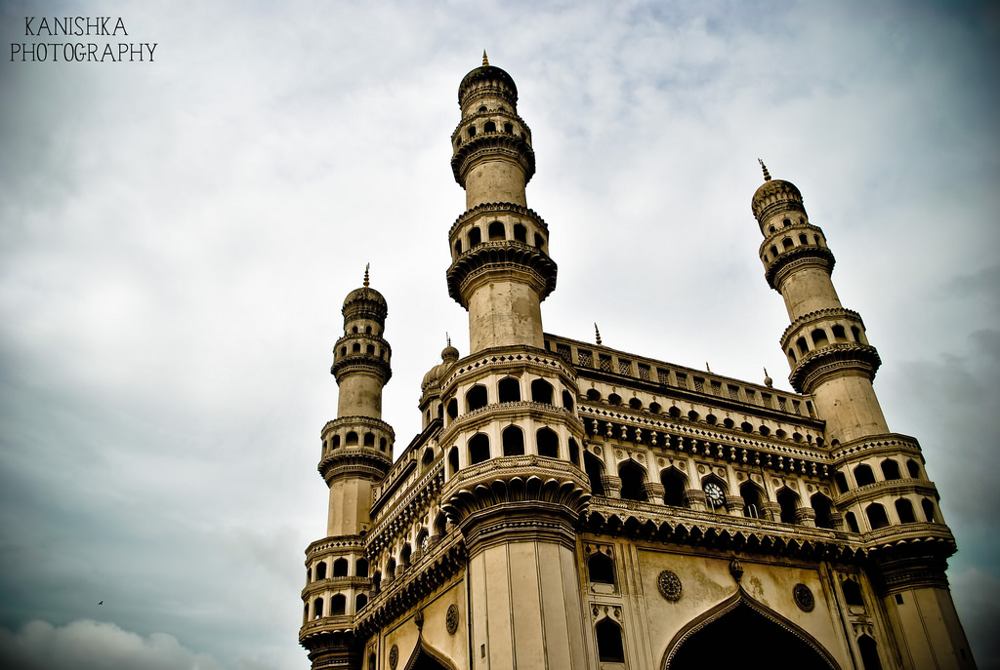
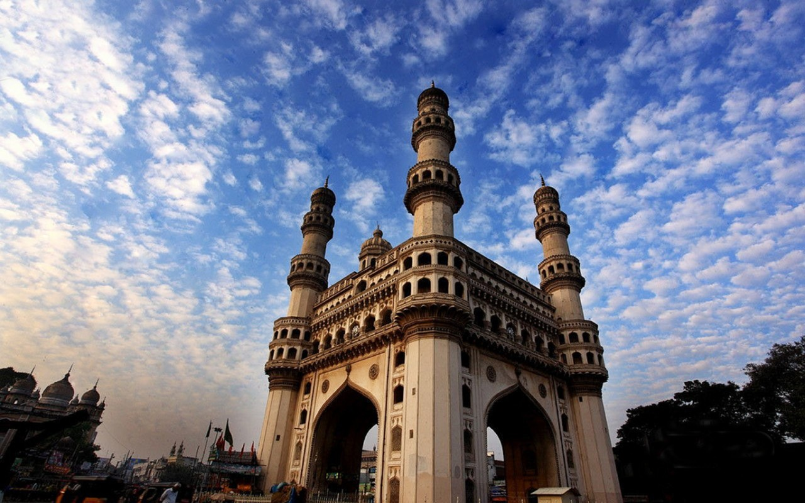

To Search for Holiday Ideas, Plan Your Trip and more.
WELCOME TO ANDHRA

Charminar
The Charminar, constructed in 1591 CE, is a monument and mosque located in Hyderabad, Telangana, India. The landmark has become a global icon of Hyderabad, listed among the most recognized structures of India.[1] The Charminar is situated on the east bank of Musi river.[2] To the west lies the Laad Bazaar, and to the southwest lies the richly ornamented granite Makkah Masjid.[3] It is listed as an archaeological and architectural treasure on the official "List of Monuments" prepared by the Archaeological Survey of India.[4]
The English name is a translation and combination of the Urdu words Chār and Minar or meenar, translating to "Four Towers"; the eponymous towers are ornate minarets attached and supported by four grand arches.[3]
The fifth ruler of the Qutb Shahi dynasty Sultan Muhammad Quli Qutb Shah built the Charminar in 1591. After shifting his capital from Golkonda to Hyderabad he built a big structure of Charminar. Because of Charminar this landmark became a global icon of Hyderabad.
Clock of the Charminar
The Charminar was constructed in the intersection of the historical trade route that connects the markets of Golkonda with the port city of Machilipatnam.[13]:195 The Old City of Hyderabad was designed with Charminar as its centerpiece.[14] The city was spread around the Charminar in four different quadrants and chambers, seggregated according to the established settlements. Towards the north of Charminar is the Char Kaman, or four gateways, constructed in the cardinal directions.[7][13] [15] [16]:170 Additional eminent architects from Persia were also invited to develop the city plan. The structure itself was intended to serve as a Mosque and Madraasa. It is of Indo-Islamic architecture style, incorporating Persian architectural elements.

The Archaeological Survey of India (ASI), the current caretaker of the structure, mentions in its records that, "There are various theories regarding the purpose for which Charminar was constructed. However, it is widely accepted that charminar was built at the center of the city, to commemorate the eradication of plague", a deadly disease which was wide spread at that time.[5] as Muhammad Quli Qutb Shah had prayed for the end of a plague that was ravaging his city and vowed to build a Mosque at the very place where he prayed.